Autonomous Databaseは初期化パラメータを初め、多くの設定は変更することはできません。
（そもそも自律型DBとして、それらを気にする必要はない、というコンセプト）
しかしながら、Oracle Databaseに詳しい方にとっては、これまでのOracle Databaseと何が違うのか？など、より詳細を知りたいと思われるかと思います。
この章ではそういった方々のために、初期化パラメータの確認やAWRレポート等の取得方法をご確認いただき、普段お使いのOracleデータベースと同様に扱えることを見ていただきます。
尚、Autonomous Databaseにおける制限事項については、次のマニュアルを参照ください。
※最新の情報については英語版をご確認ください。
本章ではアラートログやトレースログの取得方法も扱いますが、ADBを利用するに際して何か問題が生じた場合は、弊社サポートサービスに対してサービスリクエスト（SR）の発行を優先ください。
SRの発行方法については、本チュートリアルガイドの 506: サポートサービスへの問い合わせ を参照ください。
所要時間 : 約30分
前提条件 :
-
ADBインスタンスが構成済みであること
※ADBインタンスを作成方法については、本ハンズオンガイドの 101:ADBインスタンスを作成してみよう を参照ください。 -
ADBインスタンスに接続可能な仮想マシンを構成済みであること
※仮想マシンの作成方法については、本ハンズオンガイドの 204:マーケットプレイスからの仮想マシンのセットアップ方法 を参照ください。
初期化パラメータ・各種レポート・ログの取得方法は、次の目次に示す３つの方法があります：
目次：
本章ではそれぞれの取得方法の手順をご紹介していきます。
1. コマンドライン(SQL*Plus)で確認しよう
では早速、コマンドラインで確認する方法をご紹介します。
コマンドラインを使った方法は、スクリプト化が可能であり便利な手法の一つです。
まずはSQL*Plusに接続しましょう。詳細な手順はこちらを参照ください。
-
Tera Termを起動し、仮想マシンにログインします。
-
oracleユーザに切り替えます。
sudo su - oracle -
SQL*Plusでログインします。
export TNS_ADMIN=/home/oracle/labs/wallets_atp01 sqlplus admin/Welcome12345#@atp01_low次のような画面が表示されていればOKです。
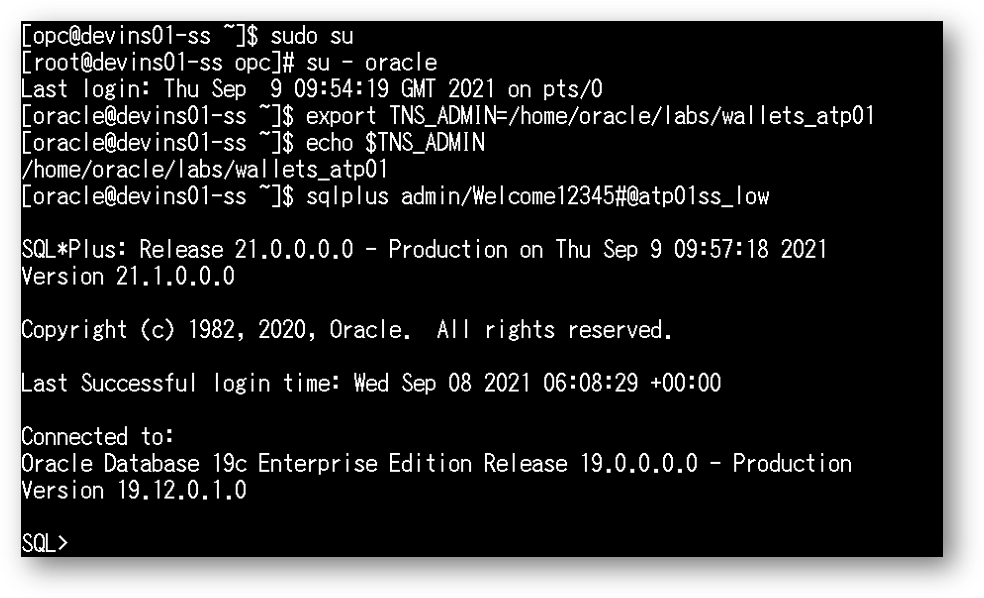
1-1. 初期化パラメータの確認
初期化パラメータは、データベースの基本操作に影響を与える構成パラメータです。
Autonomous Databasesは、プロビジョニングするコンピュートおよびストレージ容量に基づいてデータベース初期化パラメータを構成します。
それでは初期化パラメータを確認していきましょう。
SQL*Plusで次のSQLを実行します。
SELECT name, value FROM v$parameter;
次のようにパラメータ名と値が一覧されます。
初めにcolum文で列幅を設定しておくと綺麗に表示されます。
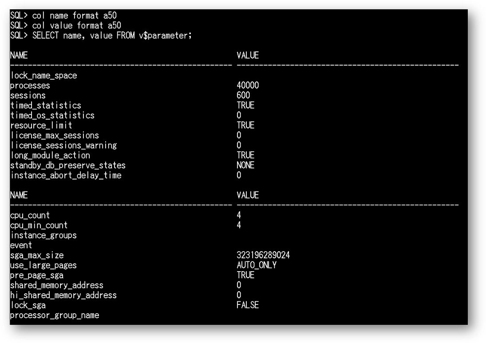
1-2. AWRレポートの確認
次に、AWRレポートの取得方法をご紹介します。
AWRとは，データベースのパフォーマンス診断のための統計情報レポジトリです。AWRでは、AWRスナップショットと呼ばれるOracleインスタンスが起動されてからの累積実行統計値を特定時刻で表にINSERTしたものを取得します。
AWRレポートは指定した2点のスナップショット間の実行統計を、HTMLもしくはテキスト形式のファイルに出力したものです。
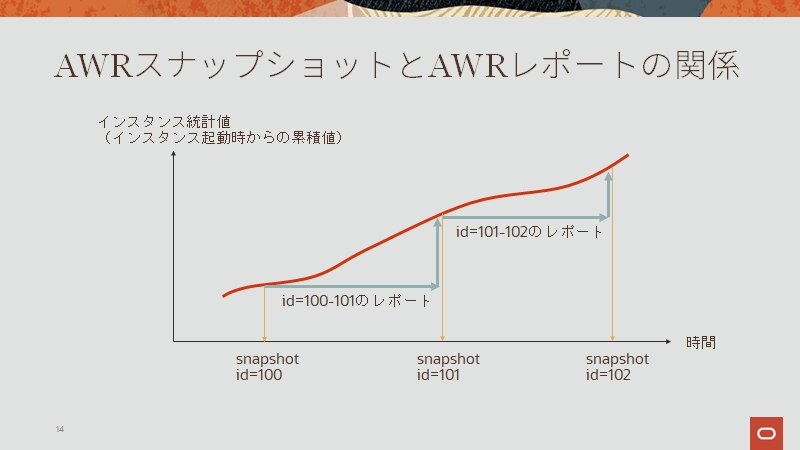
では、SQL*PlusでAWRレポートを取得してみましょう。
-
AWRレポートを取得するのに必要なDBID、 instance_number、Snapshot IDを確認するため、以下を実行します。
SET LINES 1000 SET PAGES 5000 COL BEGIN_INTERVAL_TIME FOR A30 COL END_INTERVAL_TIME FOR A30 SELECT A.DBID, I.INSTANCE_NUMBER SID, A.SNAP_ID, A.BEGIN_INTERVAL_TIME, A.END_INTERVAL_TIME FROM AWR_PDB_SNAPSHOT A, GV$INSTANCE I WHERE A.INSTANCE_NUMBER = I.INSTANCE_NUMBER AND TO_CHAR(END_INTERVAL_TIME, 'yyyy/mm/dd') = TO_CHAR(SYSDATE, 'yyyy/mm/dd') ORDER BY SNAP_ID;上記のSQLを実行すると、次のような出力結果が得られます。
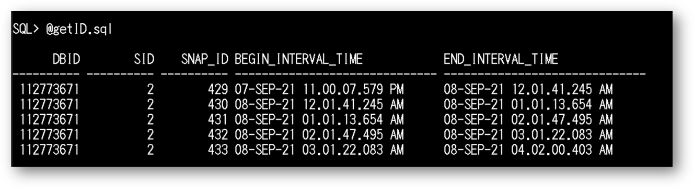
AWRレポートの取得には、DBID、SID、およびスタート地点とゴール地点2点のSNAP_IDの入力を求められます。
得られた出力結果の任意の行から、これらの値を選んでおきましょう。 -
上記の出力結果を利用してAWRを取得します。
以下ではSAMPLE_AWR.HTMLというファイルにAWRレポートを出力しています。SET LINES 1000 SET PAGES 5000 SET LONG 1000000 SET LONGCHUNKSIZE 1000000 SPOOL SAMPLE_AWR.HTML SELECT OUTPUT FROM TABLE ( DBMS_WORKLOAD_REPOSITORY.AWR_REPORT_HTML(&DBID, &SID, &SNAP_ID_START, &SNAP_ID_FINISH) ); SPOOL OFF次のように、DBID、SID、2点のSNAP_IDを聞かれたら、1.の出力結果を参考に入力します。
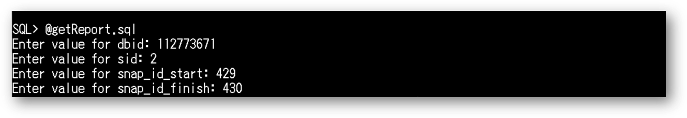
homeにSAMPLE_AWR.HTMLというHTMLファイルが生成されていることをご確認ください。
補足
スナップショットに関する情報はDBA_HIST_SNAPSHOTビューで参照できます。
スナップショット間隔の変更方法およびスナップショットの手動取得方法は次の通りです。
-
スナップショット間隔の変更方法
10分に変更する例。（デフォルトは60分）exec dbms_workload_repository.modify_snapshot_settings (interval=>10);次のコマンドで変更を確認できます。
select dbid, snap_interval from DBA_HIST_WR_CONTROL;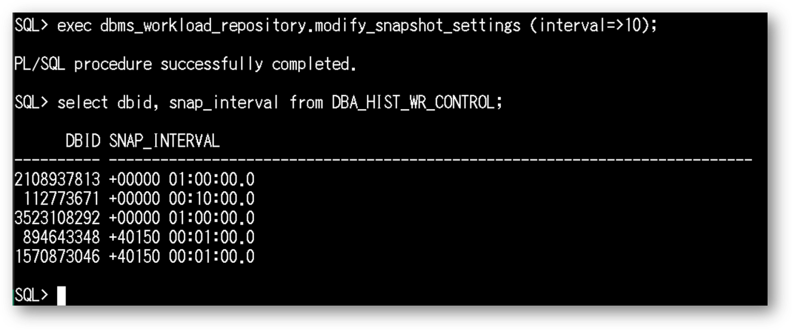
-
スナップショットの手動取得方法
exec dbms_workload_repository.create_snapshot();次のコマンドで変更を確認できます。
select dbid, end_interval_time from dba_hist_snapshot where dbid=[任意のDBID];現在取得した最新のスナップショットを確認する場合はこちらのコマンドをご利用ください。
select dbid, max(end_interval_time) from dba_hist_snapshot where dbid=[任意のDBID] group by dbid;次の出力結果のように、現在時刻のスナップショットが取得されていることが確認できます。
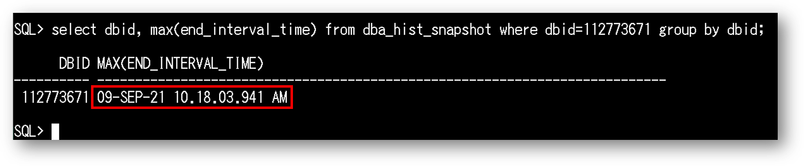
1-3. アラート・ログの確認
DB上で発生したエラーや障害の情報は、アラートファイルとトレースファイルに出力されます。
アラートファイルには発生した事象の概要が、トレースファイルには詳細が出力されます。
通常、アラートログ、トレースログはDBが稼働するOSのファイルシステム上にありますが、ADBはOS領域にアクセスすることができないため、SQLを介して取得します。
それでは、SQL*Plusでアラートログを取得してみましょう。
-
以下のSQLを実行します。（以下では直近2週間分のアラートログを表示しています。）
アラートログは、V$DIAG_ALERT_EXTビューで参照できます。-- 出力設定 SET LINES 200 SET PAGES 9999 SET TRIMS ON COL ORIGINATING_TIMESTAMP FOR A40 COL MESSAGE_TEXT FOR A120 COL PROCESS_ID FOR A20 -- アラートログの確認 SELECT ORIGINATING_TIMESTAMP, PROCESS_ID, MESSAGE_TEXT FROM V$DIAG_ALERT_EXT WHERE ORIGINATING_TIMESTAMP > SYSDATE - 14;ORAエラーや管理操作が記録されているのが確認できます。
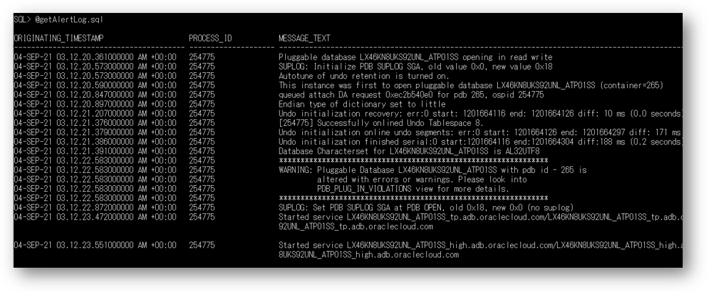
1-4. トレース・ログの確認
次に、トレースログを確認します。
トレースファイルは複数存在するため、ファイルの一覧を確認した上で、必要なファイルを表示するという流れです。
トレースファイルの内容はV$DIAG_TRACE_FILEビューおよびV$DIAG_TRACE_FILE_CONTENTSビューから参照できます。
-
必要なトレースファイル名を取得するため、以下のSQLを実行します。
-- 出力設定 COL TRACE_FILENAME FOR A30 COL FILE_NAME FOR A30 SET LINES 200 SET PAGES 9999 -- ファイル名を取得 SELECT TRACE_FILENAME, CHANGE_TIME FROM V$DIAG_TRACE_FILE WHERE TRACE_FILENAME LIKE '%ora%' ORDER BY CHANGE_TIME;次のようなトレースファイルの一覧が確認できます。
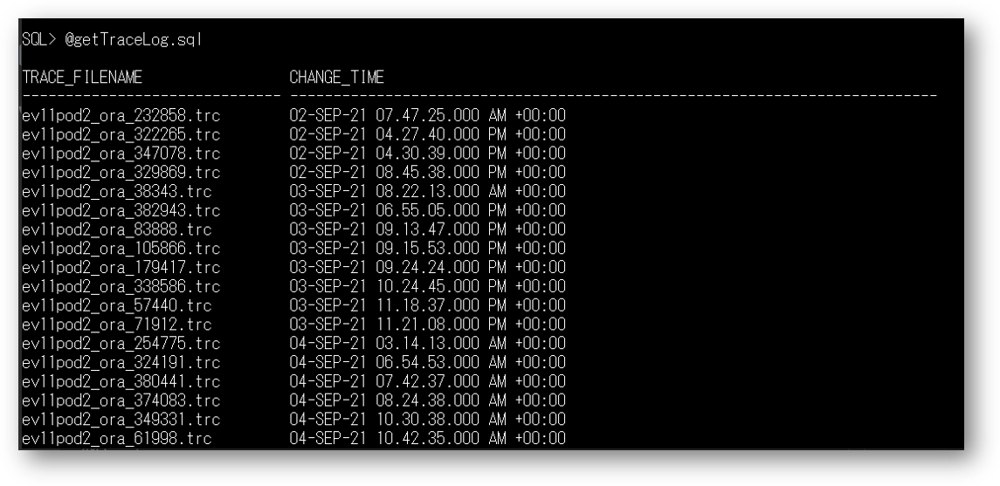
-
次に任意のトレースファイルを確認するため、以下のSQLを実行します。
-- 出力設定 COL PAYLOAD FOR A300 SET LINES 200 SET PAGES 9999 -- トレースファイルを確認 SELECT PAYLOAD FROM V$DIAG_TRACE_FILE_CONTENTS WHERE TRACE_FILENAME = '[任意のファイル名]' ORDER BY LINE_NUMBER;トレースファイルの内容が確認できればOKです。
2. SQL Developer DBAビューで確認しよう
次はSQL developerを使ったGUIベースの確認方法をご紹介します。
まずはDBAウィザードの起動方法を見ていきましょう
DBAウィザードの起動方法
-
SQL DeveloperでADBインスタンスに接続します。
前章にてSQLdeveloperに接続した場合「atp01_high_admin」という名前で接続情報が保存されていますので、そちらをご利用ください。補足
atp01_high_admin の接続情報は次の通りです：
Name atp01_high_admin
（"high"は接続サービスの一つ）ユーザー名 admin パスワード Welcome12345#
（インスタンス作成時に設定したADMINユーザーのパスワード）パスワードの保存 チェックあり
（実際の運用に際しては、セキュリティ要件を踏まえ設定ください）接続タイプ クラウド・ウォレット 構成ファイル （事前にダウンロードしておいたウォレットファイルを選択）
※詳細は、本ハンズオンガイドの 104: クレデンシャル・ウォレットを利用して接続してみよう の、3-3. SQL Developer を使った接続 を参照ください。 -
表示からDBAをクリックし、画面左下にDBAビューを表示します。
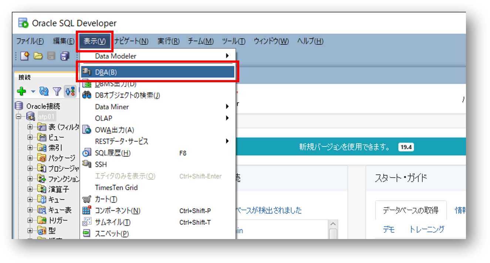
-
DBAビューに新しい接続を作成するために、左下の緑色のプラスマークをクリックします。
DBAビューでは、データベース全体のすべての関連情報が表示され、DBA権限を持つユーザのみが使用できます。
データベース管理者（DBA）権限を持つユーザーはDBAに関連した特定の情報の表示・編集または一定のDBA操作を実行することができます。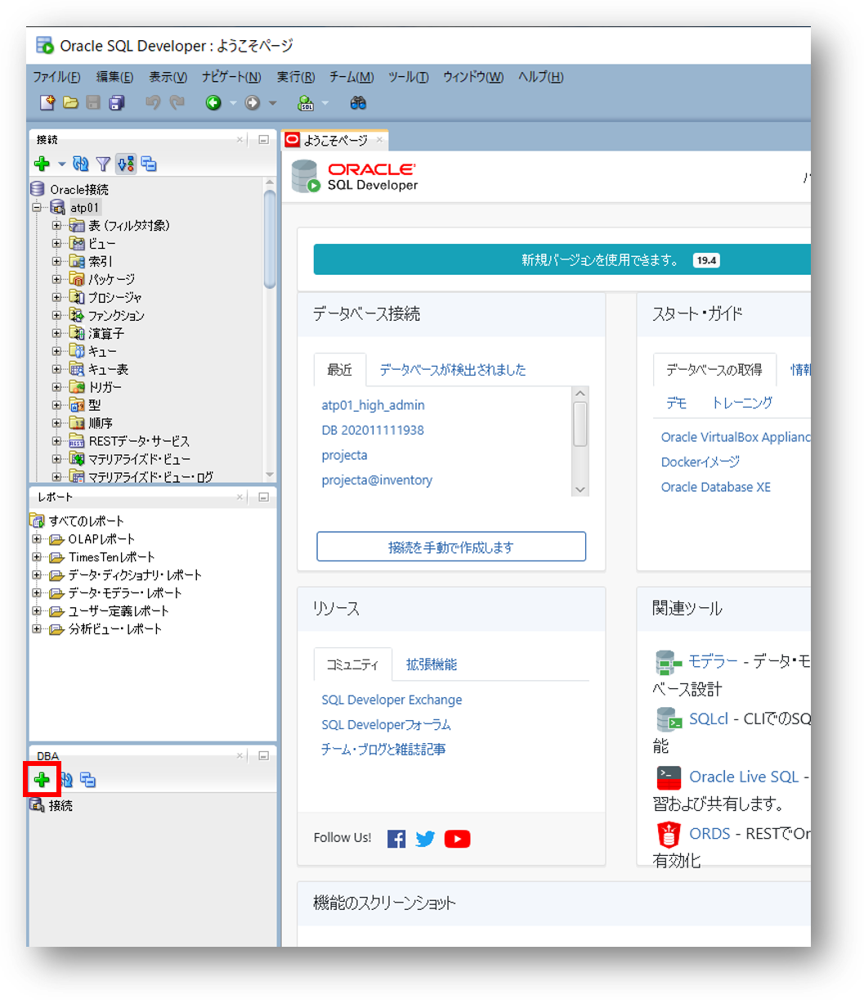
-
既存の接続から atp01_high_admin を選択し、OKをクリックします。
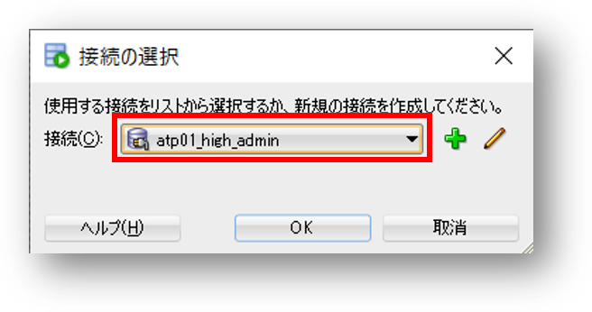
補足
ここでは便宜上、接続サービスにHIGHを利用していますが、DBAビューからの接続は管理用途であるため、本来はLOWが推奨です。
-
接続が作成されると、画面左下のDBAビューに新たにatp01_high_adminが表示されます。
プラス(+)をクリックし、詳細情報を表示してください。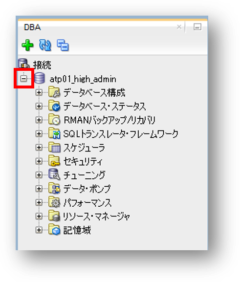
注意
以降で記載する各種レポートが上手く表示されないといった場合は、SQL Developerのバージョンを最新にアップグレードしてください。
2-1. 初期化パラメータの確認
-
データベース構成から初期化パラメータを選択します。
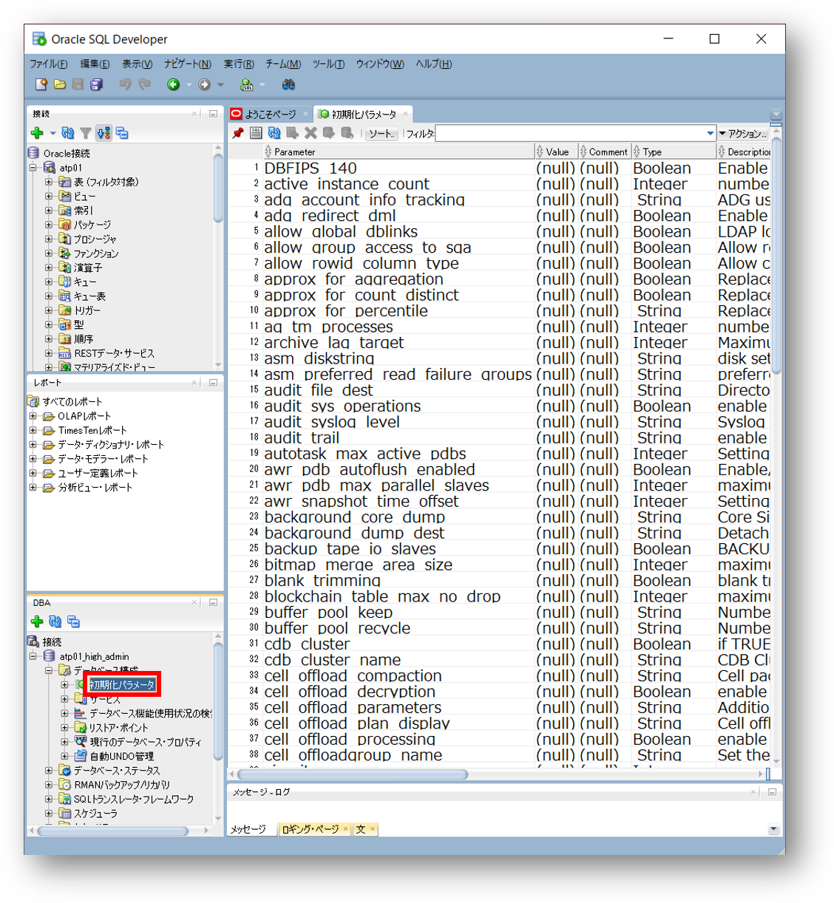
ADBに設定されている初期化パラメータが一覧で確認できます。
基本的にデフォルトのままでお使いいただくことになりますが、一部NLS_XXといったパラメータは変更可能です。詳しくは本ページの冒頭に記載の各制限事項へのリンクを参照ください。
尚、SQL*developer上で直接SQLを実行しても上記は確認可能です。
SELECT name, value FROM v$parameter;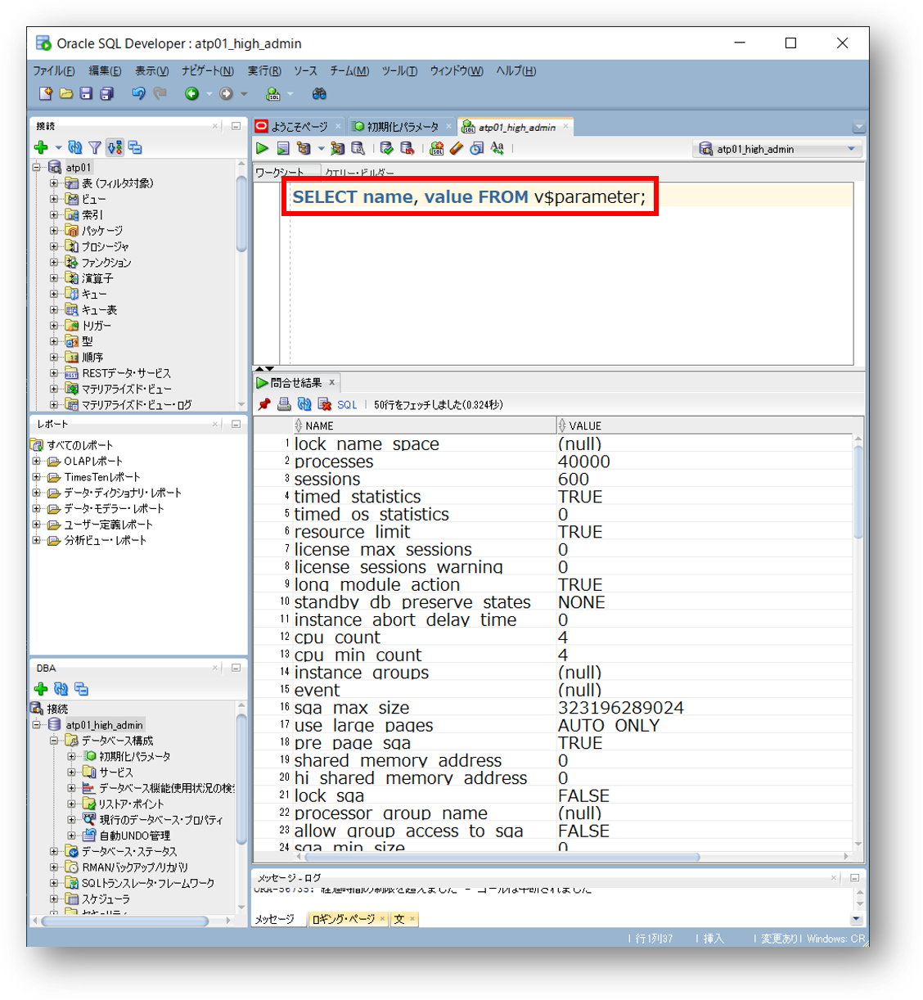
-
その他、DBAビューでは様々な情報を確認可能です。適宜ご参照ください。
補足
SQL DeveloperでのDBA機能の使用方法についての詳細情報は こちら
2-2. AWRレポートの確認
-
SQL Developer DBAビューよりAWRレポートを取得しましょう
1-1. パフォーマンスからAWRを選択します。
Diagnostic Packのライセンス保有に関する確認がありますので、はいをクリックします。
Diagnostic Packを含め、ADBではOracle Database の多くのオプション機能がサブスクリプションに含まれており、従来から多くのお客様でご利用いただいている有償機能が追加費用なく使うことができます。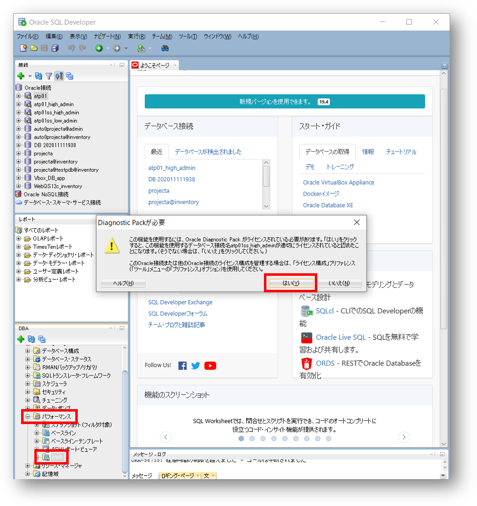
補足
ADBではRAC、Partition、Database In Memory、Advanced Compression、Advanced Security、diagnostics pack、等のオプション機能がデフォルトでサブスクリプションに含まれております。
利用できないオプション機能については本ページの冒頭に記載の各制限事項へのリンクを参照ください。この機能を使用するには、Oracle Diagnostic Pack がライセンスされている必要があります。
1-2. AWR Report Viewerを選択します。
参照からスナップショットを選択し、緑色の取得ボタンをクリックください。（取得には多少時間がかかります。）補足
ADBではデフォルトで1時間に1回、スナップショットが作成されますが、データベースを作成した直後の場合、スナップショットが存在しない場合があります。しばらく時間を空けて実施ください。
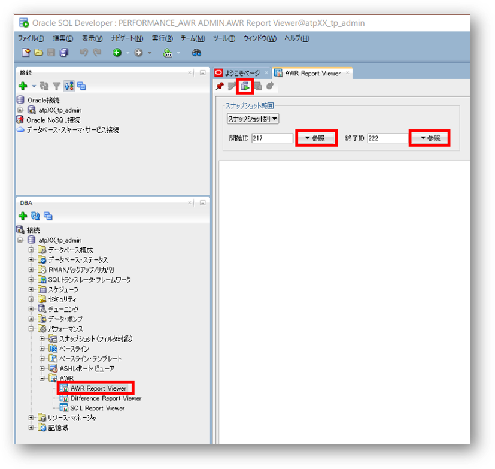
1-3. AWRレポートが表示されますので、保存ボタンをクリックしてAWRレポートを保存してください。
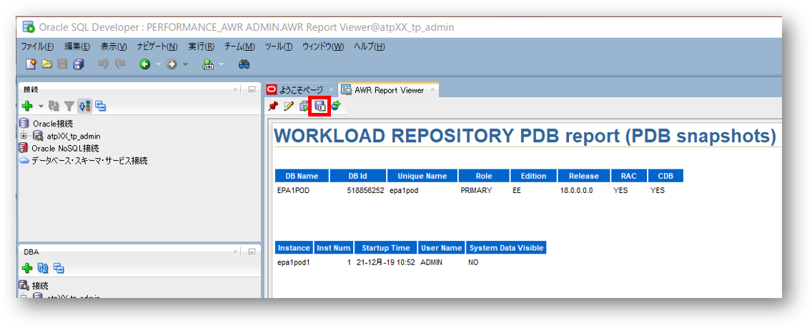
補足
SQL Developer DBAビューでは、AWRのスナップショットを取得することも可能です。
3. OCIコンソール上のパフォーマンスハブで確認しよう
OCIコンソール上のパフォーマンスハブから、AWRレポートを取得することも可能です。
取得方法についてはこちらを参照ください。
また、パフォーマンスハブのマニュアルはこちらを参照ください。
以上で、この章の作業は終了です。